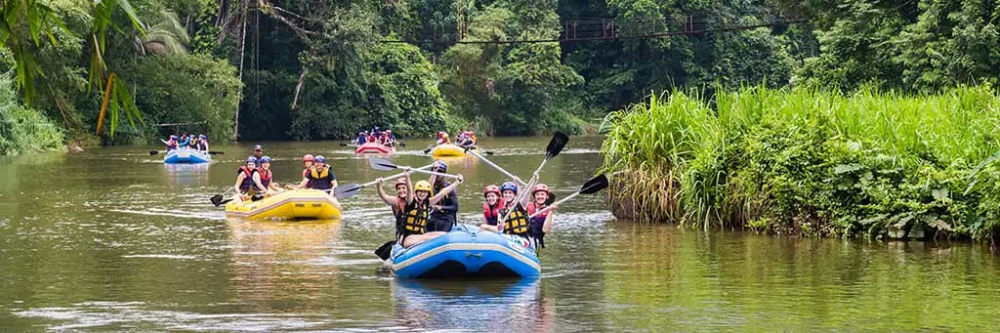
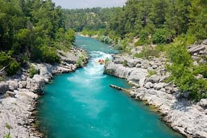

Have a question? Want to book a trip? Our operators are standing by to take your call! Call 1-800-RAFTING now!

Down the River Whitewater Adventures
History
Down the River was started in 1995 by John and Mary Smith of Idaho Falls, Idaho. "We love whitewater rafting with our kids when they were young,' said Mary. "After they were grown, it seemed like a logical extension to share that love with the public.""
Serving greater Southeast Idaho for 30 years, Down the River offers a variety of trips for a variety of skill levels. Rafters can choose from half-day, whole-day or multi-day excursions. Check out the Trips page to see what is currently being offered!